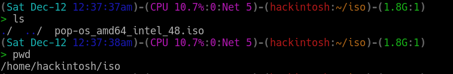
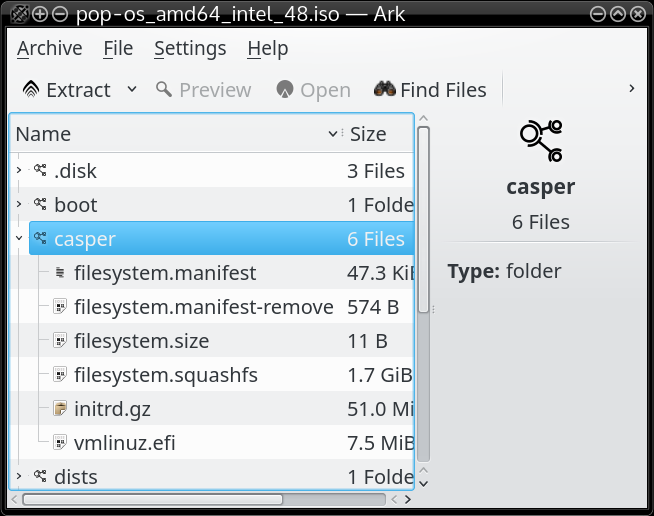

How to boot linux iso without usb on corrupted bios of lenovo laptops
Recent bug(link) in ubuntu 17.10 has become a great pain for lenovo laptop users(also some acer and toshiba laptop models) as their bios get corrupted due some unexpected behavior of intel driver in linux kernel. Because of this bug the users are not able to change their bios settings anymore and even the most important part is that the USB booting is not possible anymore since USB is not recognized in boot options. If you are a distrohopper like me or you want to install or switch to another distribution then this bug can be your nightmare because you are stuck in using ubuntu only.
Let's not get terrified, because their is alternative method to install linux distribution without using usb or any other external media. This method may also be useful for other distrohoppers who want to save time in creating bootable media and also want to save yourself from inserting usb on your system every time, to try live distributions.
What causing the issue
I am not expert on this but as mention in the bug description it is caused by intel-spi- drivers in the kernel which have altered some bios related code. Due to closed nature of intel bios it is difficult to find out what exactly has altered. It was mentioned by ubuntu developers that patch for this issue will save future system to get affected but already affected user have only way to solve this issue by changing their BIOS chip. So, those who are not ready to go for this solution but want to install another distribution can use below method.
Booting directly from iso present in hard drive
Grub2 have the capability to boot directly from iso file present in any of your hard drive storage. Using this feature most Linux distributions as well as popular rescue CDs can be booted directly from an ISO file.
But How?
- You need to download the iso of distribution you want to install and place it at any known location inside one of your partitions.
For demonstration I am using pop!_os(link) iso and save it inside my root(sda2) partition inside folder /home/hackintosh/iso/ .

- First rename the file to any simple name (pop.iso in my case) to make things easier.
- Now open the iso through any archive manager.
- Go inside casper folder and view its contain.

- The file with vmlinuz.efi or similar name is your kernel file and initrd.gz( or similar name) is your initial ramdisk whose name you require in next step.
- Now open file /etc/grub.d/40_custom and add this menuentry at the end.
menuentry "Pop up" {
loopback loop (hd0,2)/home/hackintosh/iso/pop.iso
linux (loop)/casper/vmlinuz.efi boot=casper iso-scan/filename /home/hackintoshiso/pop.iso noprompt noeject
initrd (loop)/casper/initrd.gz
}
Here in (hd0,2) '0' represent my internal hard disk(sda) and '2' represent my partition number(sda2).
In front of linux entry is your kernel name vmlinuz.efi and in front of initrd is initrd.gz file.
- Now save this file and run command update-grub.
$sudo update-grub #or sudo grub-mkconfig -o /boot/grub/grub.cfg
Once the command complete you can reboot your system.
Inside the boot menu you will get a new entry named 'Pop up' which you can select to boot.
You can run the distribution as Live(if supported) or install it. If you want to perform an installation from the same ISO, you'd need to unmount the ISO image first
$sudo umount -l /isodevice
Now after knowing this you don't need bootable media anymore.Cheers!
Subscribe to Linuxed and reversed
Get the latest posts delivered right to your inbox